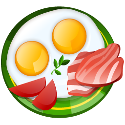
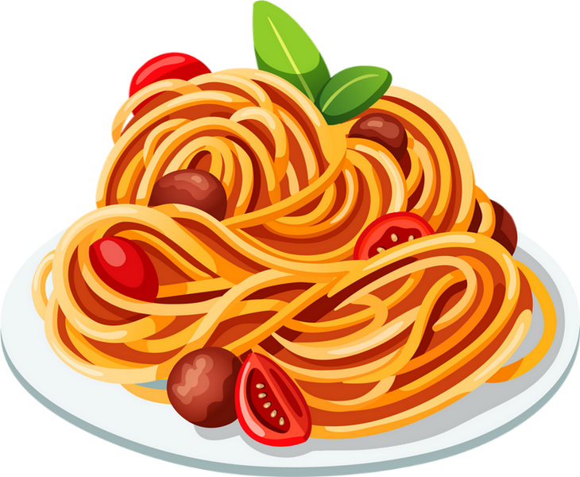

-

High fat, Low carbLe régime low carb high fat consiste à diminuer sa consommation de glucides, qu’elles soient rapides ou lentes et d’augmenter sa consommation de gras. Donc en LCHF on limite strictement lea pâtes, le pain, le riz, les pommes de terre, mais également les fruits.
-

High carb, Low fatLe régime High Carb consiste à s’alimenter essentiellement de glucides. Contrairement à de nombreux autres régimes alimentaires, celui-ci ne nécessite pas de suivre impérativement sa consommation de calories.
Il s’agit avant tout de prêter attention à ses sensations de faim et de satiété naturelles. -
Jeûne intermittentLe jeûne intermittent recouvre une famille de régimes alimentaires consistant à alterner des périodes de jeûne et des périodes d’alimentation normale. Ces régimes seraient efficaces pour mincir, réduire le poids et la masse graisseuse
-

Max proteineCe régime consiste à consommmer le max des matières grasses, en minimisant les carbohydrates et les glucides pour sécher les gresses et augmenter la masses musculaires.